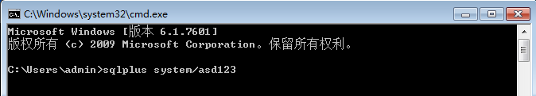
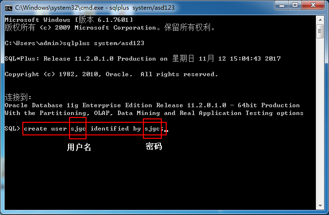

数据库初始化
创建数据库用户
创建用户之前，需要登录到权限用户,用户名称为system,密码为安装oracle中所设置的密码(oracle第16步骤所设置的密码,系统演示密码为asd123) sqlplus system/asd123

输入正确后,可向下执行 新建用户： create user sjgc identified by sjgc;

给新用户授权：grant dba to sjgc;
创建用户之前，需要登录到权限用户,用户名称为system,密码为安装oracle中所设置的密码(oracle第16步骤所设置的密码,系统演示密码为asd123) sqlplus system/asd123
输入正确后,可向下执行 新建用户： create user sjgc identified by sjgc;
给新用户授权：grant dba to sjgc;